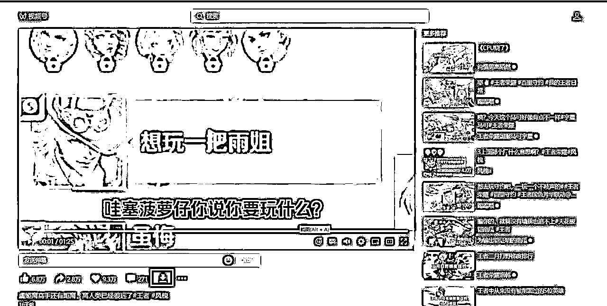
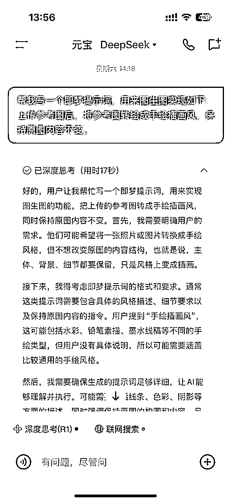
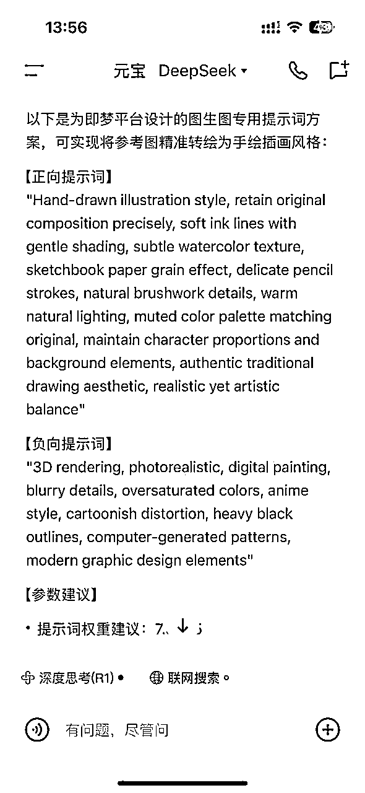
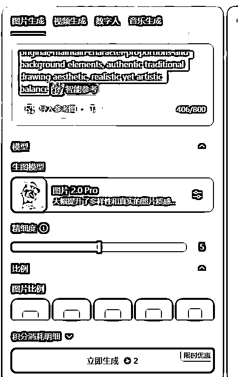
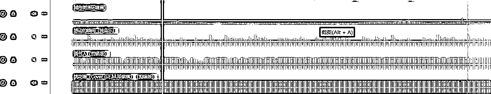
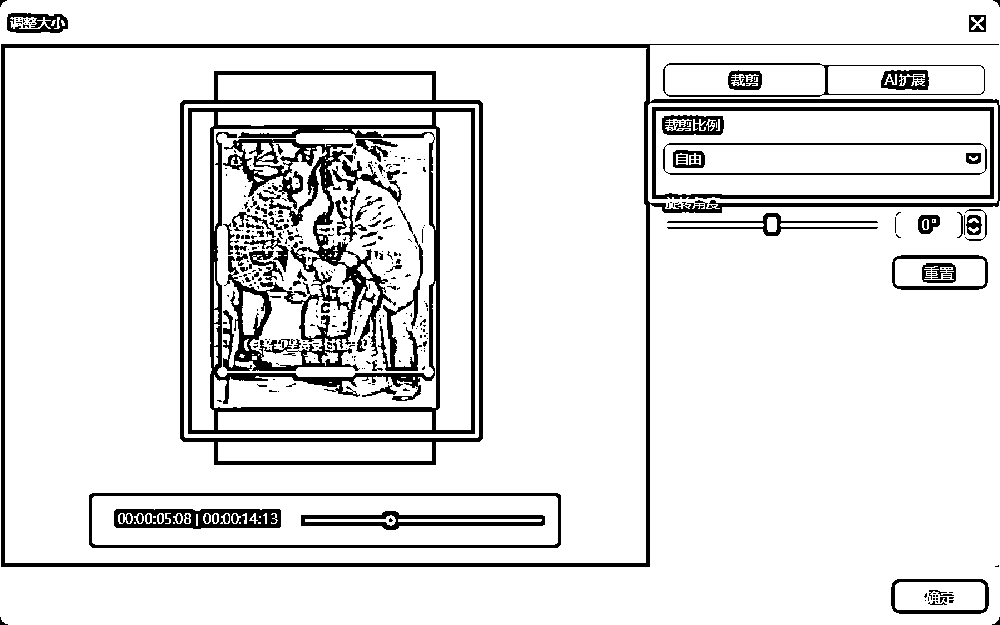
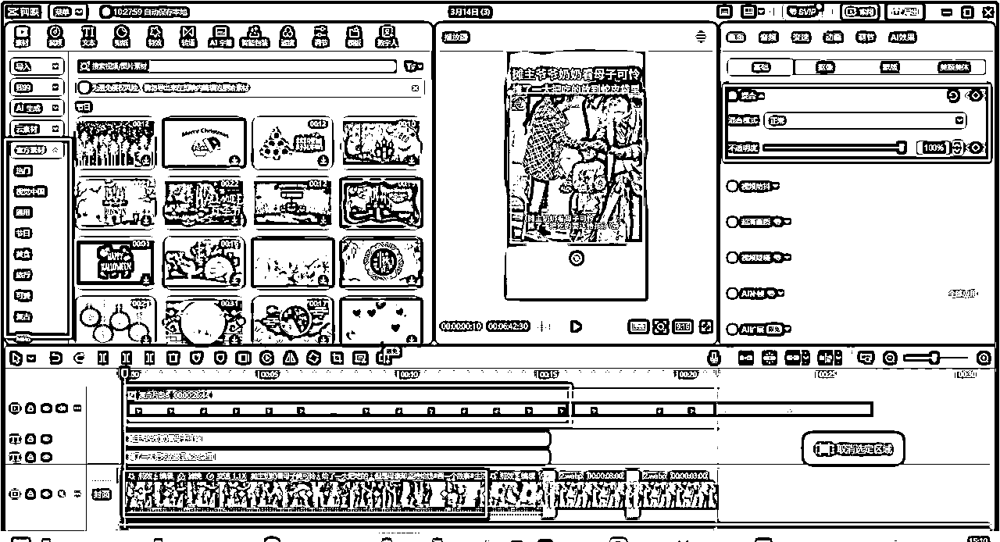

来源：https://fiazd3hbob.feishu.cn/docx/M8J1dvi9aoB8wvx9xHqcED1Dnhi
看到亦仁老大发的这个风向标（https://scys.com/articleDetail/xq_topic/8858115581141512），从前天开始测试，到今天已经可以看到收益了，在风向标群里简单聊了之后还是来写个帖子详细说一下自己做的流程，给没有头绪的伙伴更清晰的思路。
从亦仁老大风向标的标题就能拆出来这个项目的关键步骤：
在抖音或者视频号搜索如下内容：
#画一个世界 视频号里搜
#感人瞬间
#感动瞬间
#泪目
有这几个就够了，多刷一刷点点赞，后续推送的就都是类似内容了。
高效率的收集素材我目前是没事儿就刷一刷，看到万赞以上的就顺手转发到自己的单人群里放着，等集中时间做后续处理。
抖音里的素材很好下载，收费工具首选亨亨猫（https://hhm.zzrjcp.com/），免费工具用这个（https://jianghudata.com/），都可以很好的去水印下载抖音里的素材，软件使用就不喂饭了😂，小伙伴儿们自己研究一下，很简单。
视频号里的素材下载起来稍显麻烦一些，但也有现成的工具，工具地址：https://github.com/ltaoo/wx_channels_download，访问比较慢，我把工具放到这里有需要的可以直接下载（系统可能会报毒，不放心的可以自己去上边的地址下载）：
使用方法：下载下来后，右键-->以管理员身份运行，首次运行会提示安装证书，同意就可以了。以后每次运行都需要以管理员身份运行，运行好之后，在微信里打开想要下载的素材，会在页面上看到下载按钮，点击下载按钮就可以了，如下图：

所有下载好的素材统一保存到自己的工作目录里留着后续剪辑。去重看文章后面。
这里目前我用的是截图加即梦转绘的方式，对comfyui比较熟的可以直接上工作流。
首先把需要转绘的视频放到剪映里，然后在把时间轴调整到想要截图的位置（关键点，高潮部分，催泪画面等等），然后按下图导出静态帧图片：
有了图片之后去即梦，使用图片生成功能。
首先是提示词（我目前用的）：Hand-drawn illustration style, retain original composition precisely, soft ink lines with gentle shading, subtle watercolor texture, sketchbook paper grain effect, delicate pencil strokes, natural brushwork details, warm natural lighting, muted color palette matching original, maintain character proportions and background elements, authentic traditional drawing aesthetic, realistic yet artistic balance
提示词来源，万事不决问AI：


再或者，微信里搜索：定格漫画，可以搜出来很多做转绘的方法。
提示词有了，导入参考图直接导入自己想转绘的图片，选择智能参考，生图模型选择图片2.0 Pro：

基本上一次就能找到合适的，继续抽卡概率比较低，选一张合适的HD高清后保存，留着后续剪辑成片用。
开通这个计划需要满足3点：
成片是什么样子看亦仁老大风向标里提到账号的视频就可以，主要需要做的就是素材去重，去重关键步骤：



直接查视频号分成计划航海手册：https://scys.com/view/docx/Ze3rdUHuIouvqTxK7amcyp6anXf